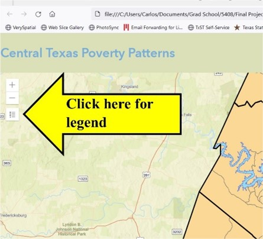

Instructions
This map is intended to allow the user to visually explore estimates from the ACS that have been mapped, along with the corresponding upper and lower estimates within the margin of error (MOE). In this proof-of-concept, the map features data showing the percent of the population living with income below the federal poverty rate, at the census tract level. Click on the legend icon on the upper left-hand corner of the map to expand the legend (figure 1). The legend will show symbology for every layer contained in the map. Use the query box on the upper right-hand corner of the map to search for the location of an address. Click on the LayerList icon below the query box to expand the LayerList widget (figure 2). The LayerList widget allows the user to select which layers are visible or invisible by clicking on the eye icon.
Figure 1, collapsed legend button
The swipe widget appears as a thin vertical line with a button at the center, towards the right of the map (figure 2). Use the swipe tool to reveal the next layer below the top-most activated layer in the LayerList. The estimated poverty rate will show on the left side of the swipe tool. If the estimated poverty rate layer is deactivated in the LayerList widget, it will not show on the map. In this case, only the layer with the poverty MOE lowest estimate will show. The upper and lower estimate will display on the right of the swipe tool unless the layers are deactivated in the LayerList widget.
Figure 2, collapsed LayerList button and Swipe widget.
Click on a census tract to view a popup showing a table with the census tract’s name, the poverty estimate, the MOE, the upper poverty estimate (calculated by adding the MOE to the poverty estimate), and the lower poverty estimate (calculated by subtracting the MOE from the poverty estimate). Figure 3 shows the map with the legend and LayerList expanded, the swipe tool halfway revealing the lowest estimates within the MOE, and the popup showing the values for a Travis County census tract.